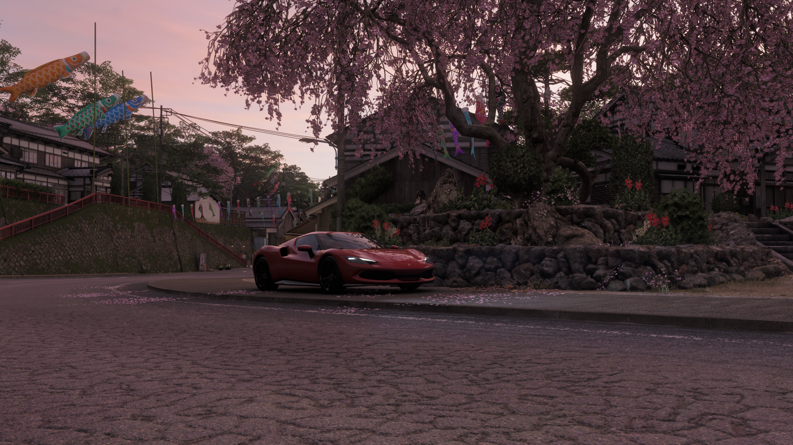

Evidence item recovered from the clinician's archive.
patient_case_profile.png

A perfect story is a curated delusion; it only shows you what it wants you to see. True insight requires looking beneath the canvas to examine the file's digital skeleton. Force the system to read this case profile's internal details and properties.
Hidden deep within the clinician's background log tags, you will harvest the 4-digit secret year code that initiated the lie. Input that year to open the case file.